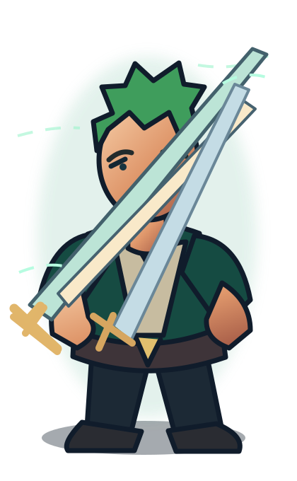

East Blue
Every dream needs a departure.
Not chasing the One Piece.
Building what comes next.
I'm Sivanesan B — AI Engineer, builder of real-world GenAI systems, and IEEE-published researcher. This is my story, told through the spirit of a Grand Line adventure.

AI ENGINEER · GRAND LINE CAPTAIN
Luffy — animated One Piece character.
Anime reference supplied for this personal fan-inspired portfolio. The clip is 2D animation; the separate 3D galleon and character models are original.
That unwavering look. That determination to keep moving forward. This Luffy moment captures the energy that inspires my developer journey.
But the story here is Sivanesan B — building real Voice AI, RAG, agents and efficient language-model systems. The anime is the spark; the engineering is mine.
Real 3D pirate characters with articulated arms, legs and animated faces, standing aboard a detailed 3D sailing galleon. Drag to orbit, select your crew and animate their poses — while my AI engineering remains the story.
One Piece is about chasing a dream across an impossible ocean. My version of that dream is simpler: build AI that actually works outside a demo.
From studying Artificial Intelligence & Data Science at Kumaraguru College of Technology to research in efficient LLMs and engineering voice agents, retrieval pipelines and autonomous workflows — each new problem has been another island.
Inspired by the progression of One Piece's major arcs, reimagined around my real engineering journey. These aren't claims about the anime's characters — they're milestones from my own story. EAST BLUE is the current chapter.
My first island was curiosity. I studied Artificial Intelligence and Data Science at Kumaraguru College of Technology and started turning ideas into actual software, experiments and working prototypes.
Instead of simply making LLMs bigger, I explored making them more efficient. My Eco-Transformers work studied self-pruning and activation freezing, culminating in an IEEE conference publication.

REACH BEYOND THE CLOUDSShips need engineering, not just a beautiful sail. VoiceForge AI represents that mindset: voice agent management, telephony integration, realtime transcripts, provider workflows and full-stack product engineering.

VOICEFORGE / LIVE CONVERSATION ENGINEUseful intelligence must respect the environment it serves. My Offline Inventory RAG Assistant combines local speech recognition, a quantized language model and FAISS search for knowledge workflows without relying on cloud connectivity.
The next leap was making systems that coordinate and act. My projects include an autonomous job agent and AI voice recruiter, combining browser workflows, event orchestration, conversational AI and computer vision.

THE AGENT FLEET · ORCHESTRATIONThere is no final island for an engineer. I'm continuing to explore production RAG, autonomous AI, voice systems and efficient models, always with one question: how do we make this useful in the real world?
One Piece's legendary arc names provide the storytelling structure, not claims about my personal history. The route below is a selective chronological map of major arcs, from East Blue through Elbaph. Official story reference ↗
Every dream needs a departure.
First impossible missions.
Go farther than expected.
Build the ship that carries the dream.
Challenge what seems impossible.
Learn in uncertain territory.
Resolve under pressure.
New horizons below the surface.
Collaborate across complexity.
Navigate unexpected constraints.
Awaken new capabilities.
The future of intelligence.
More adventures ahead.
The story is a tribute. The work is real. Explore public repositories, implementation approaches and the engineering problems behind each chapter.
6 featured expeditions shown
Provider-oriented voice agent platform for conversational workflows, telephony, transcripts and AI operations.
Air-gapped inventory assistant combining local language inference, Whisper speech-to-text and FAISS retrieval.
Research into self-pruning and activation freezing methods for accelerated, carbon-efficient LLM inference.
AI-powered job workflows: discovery, application preparation, browser automation and multi-step execution.
Voice-first interview experience with contextual follow-ups and computer-vision-enabled proctoring experiments.
Production-oriented AI full-stack systems and practical agent-driven application engineering.
Live public GitHub repositories; searchable by name, description and language.
Loading repository data…
Eco-Transformers: Carbon-Efficient and Accelerated Inference through Self-Pruning and Activation Freezing in LLMs. Presented as a 2025 IEEE conference publication.
Performance figures are the results described in the project's GitHub profile; refer to the paper and methodology for experimental conditions and limitations.
No fictional power levels: these are the technologies used across my projects, research and full-stack experiments.
Explore original 3D world ↗Python · LLMs · LangGraph · RAG · Prompt engineering · AI agents · Retrieval evaluation
Voice AI · Vapi · Whisper STT · Real-time pipelines · Telephony integration
FastAPI · TypeScript · Next.js · REST APIs · PostgreSQL · Supabase · Playwright
PyTorch · Transformers · FAISS · CodeCarbon · Efficient inference
Have a challenging AI problem, an engineering opportunity, or an idea worth exploring? I'm ready to talk about what can actually be built.